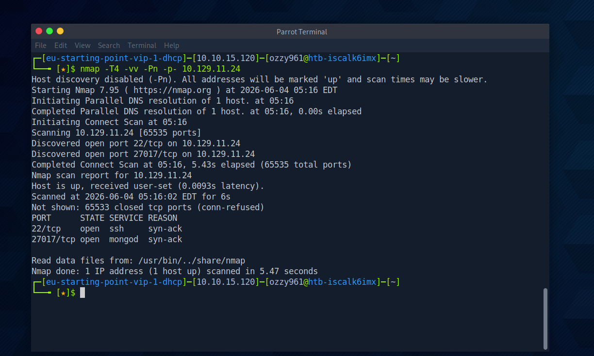
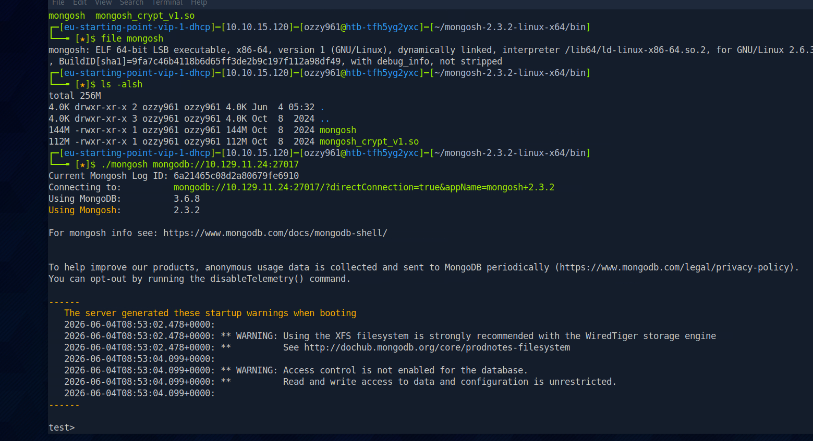
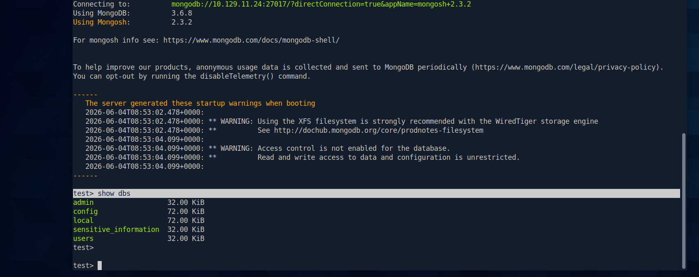
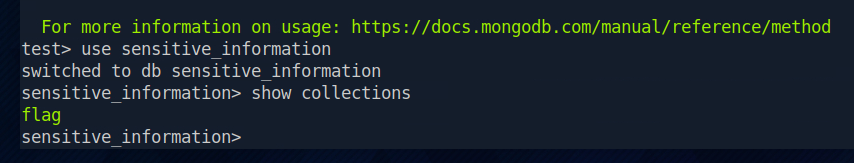
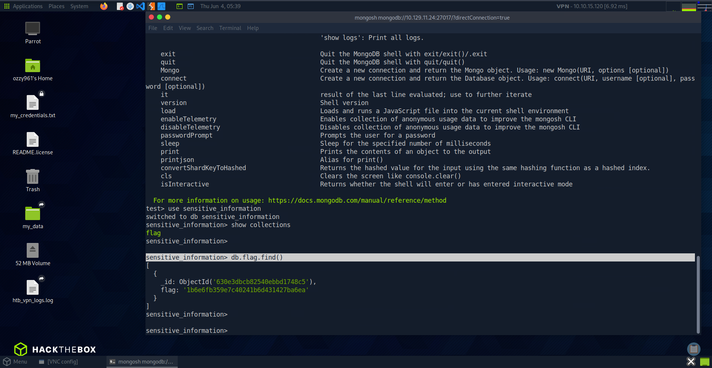

Identifying the exposed services
After several failed scan attempts, I switched to a full TCP port scan with increased timing, verbosity and host discovery disabled. The objective was to identify the complete externally reachable attack surface.
nmap -T4 -vv -Pn -p- <TARGET_IP>
Full TCP enumeration identifying SSH and MongoDB.
PORT STATE SERVICE REASON VERSION
22/tcp open ssh syn-ack OpenSSH 8.2p1 Ubuntu 4ubuntu0.5 (Ubuntu Linux; protocol 2.0)
27017/tcp open mongodb syn-ack MongoDB 3.6.8
Service Info: OS: Linux; CPE: cpe:/o:linux:linux_kernelThe target exposed:
- 22/tcp — OpenSSH 8.2p1 on Ubuntu.
- 27017/tcp — MongoDB 3.6.8.
SSH was exposed but did not immediately provide a useful attack path. MongoDB on port 27017 therefore became the primary focus because an externally reachable database should be tested for authentication and data exposure.
Launching the MongoDB shell
I needed a MongoDB shell to interact directly with the exposed service. On the HTB Pwnbox environment, I downloaded and extracted mongosh before connecting to the target.
wget https://downloads.mongodb.com/compass/mongosh-2.3.2-linux-x64.tgz
tar xvf mongosh-2.3.2-linux-x64.tgz
cd mongosh-2.3.2-linux-x64/bin
Verifying the MongoDB shell and connecting to the exposed MongoDB service.
After confirming the downloaded binary, I connected directly to MongoDB over port 27017.
file mongosh
ls -alsh
./mongosh mongodb://<TARGET_IP>:27017The MongoDB shell established an interactive session without prompting for authentication.
This confirmed that the exposed MongoDB service allowed unauthenticated interaction, making native database enumeration possible.
Enumerating available databases
With an interactive MongoDB session established, I moved from service enumeration to database-level enumeration. The first step was determining which databases were visible to the current session.
show dbs
Enumerating the databases exposed by the MongoDB instance.
admin 32.00 KiB
config 72.00 KiB
local 72.00 KiB
sensitive_information 32.00 KiB
users 32.00 KiB
test>The session exposed multiple databases, including sensitive_information.
The visible databases included both standard MongoDB databases and application-specific databases:
- admin — administrative database.
- config — MongoDB configuration data.
- local — local instance data.
- sensitive_information — the highest-priority application database identified during enumeration.
- users — another application database exposed to the session.
The sensitive_information database became the immediate target for deeper enumeration.
Discovering the flag collection
MongoDB organizes data into databases and collections. After identifying the most interesting database, I switched into it and enumerated the collections available within that context.
use sensitive_information
show collections
Enumerating collections inside the sensitive_information database.
The selected database exposed a collection named flag.
Other databases could also be selected during enumeration when necessary:
use admin
use usersThe discovery of a collection explicitly named flag provided a direct target for document enumeration.
Retrieving the flag document
With the flag collection identified, I queried its documents using MongoDB's find() method.
db.flag.find()
Querying the flag collection and retrieving the stored document.
The unauthenticated MongoDB session allowed the flag collection to be queried, exposing the stored document and its ObjectId.
No credential recovery, exploit chain or privilege escalation was required. The flag was directly accessible through the exposed database interface.
Breaking down the assessment
Mongod was primarily an exercise in systematic database enumeration. Once MongoDB was identified as an exposed service, the remaining attack path relied on understanding the database structure and querying the data made available to the unauthenticated session.
Nmap → MongoDB 27017 → mongosh → Anonymous access → show dbs → sensitive_information → show collections → flag → db.flag.find() → Flag
The key security failure was not a complex software vulnerability. It was the combination of an exposed database listener and insufficient authentication controls.
MongoDB commands used
The assessment followed a simple database hierarchy: identify the databases, select the relevant database, enumerate its collections and query the discovered collection.
- show dbs — list databases visible to the current session.
- use sensitive_information — switch the active database context.
- show collections — list the collections available in the selected database.
- db.flag.find() — query documents stored in the flag collection.
Databases → Database → Collections → Documents
MongoDB's official shell documentation describes show dbs for listing databases, show collections for listing collections in the current database, and db.collection.find() for querying documents. :contentReference[oaicite:1]{index=1}
Securing MongoDB
The weakness demonstrated by Mongod came from configuration and exposure rather than a complicated exploit. A production deployment should treat database access as a privileged operation and restrict it accordingly.
- Restrict MongoDB exposure to trusted hosts, interfaces and network segments.
- Require authentication for remote database access.
- Apply least-privilege roles to users and applications.
- Prevent untrusted clients from directly reaching database listeners.
- Monitor authentication and database access for unexpected connections.
- Keep MongoDB and the underlying operating system maintained and appropriately hardened.
Lessons from Mongod
Mongod reinforced several practical lessons about network enumeration, exposed databases and technology-specific testing:
- Full-port scanning matters. MongoDB was exposed on 27017, demonstrating why limiting scans to common ports can miss important services.
- Identify the technology before choosing the next step. Once MongoDB was identified, the assessment could move from generic network discovery to MongoDB-specific enumeration.
- Test authentication early. The shell connected without credentials, turning a potentially restricted database service into a directly enumerable attack surface.
- Follow the application's data hierarchy. Moving from databases to collections and then to documents provided a straightforward path to the sensitive data.
- Native administration interfaces can be enough. No software exploit was necessary; understanding MongoDB's own shell and query model was sufficient to retrieve the flag.
Tools used
The main tools and techniques used during the exercise were:
- Nmap — full TCP port and service enumeration.
- mongosh — interactive MongoDB client for remote database interaction.
- Database enumeration — identifying databases visible to the current session.
- Collection enumeration — identifying collections within the selected database.
- Document querying — retrieving documents from the discovered collection.
Related resources
The resources below cover the Mongod lab and the MongoDB shell, database enumeration and document querying techniques used throughout the assessment.